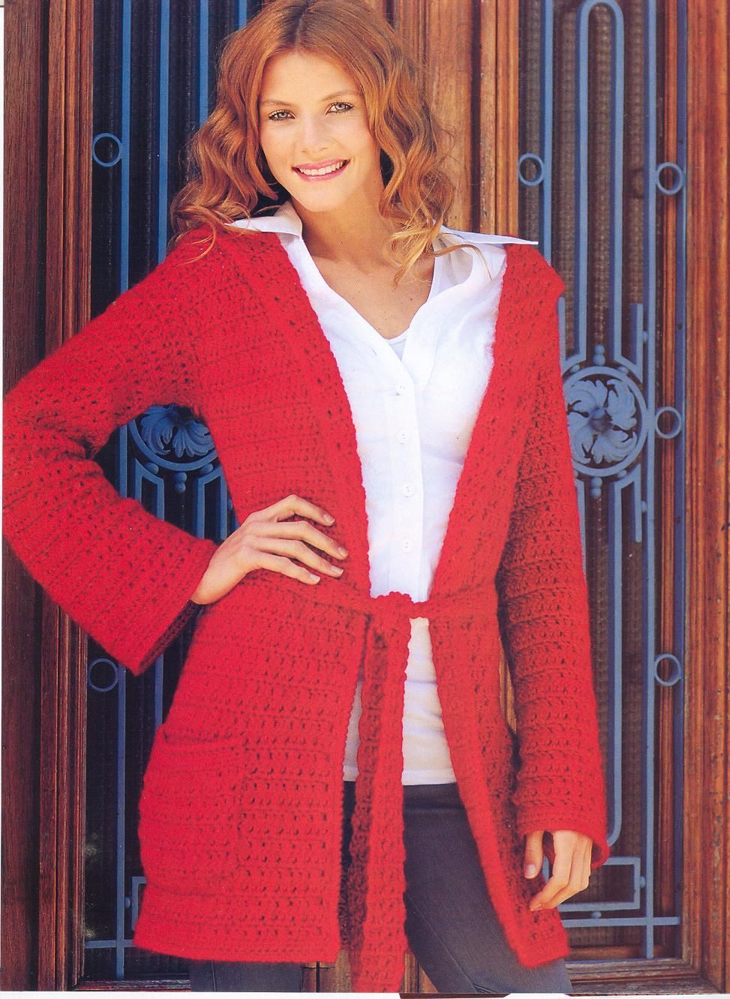

Sobre mi
Hola!! Soy Estefanía, la persona que está detrás de Alelí!
Soy profesora de Jardín de Infantes y ahora tu profe de crochet, a tiempo completo!! Logré fusionar mi profesión con mi hobby! Toda mi vida me la he pasado haciendo manualidades; pintura, reciclado, bordado… hasta que un día conocí el crochet y nunca más lo dejé, me enamoré profundamente.
Mi deseo es conquistar tu corazón y el de cada persona que se cruce en mi camino. Que se enamoren del crochet como yo y que descubras su MAGIA! Que disfrutes de tejer mis patrones y diseños, de mis talleres presenciales, seminarios y de este mundo craft en el que vivo muy feliz! Despertar la creatividad e inspiración en mujeres de cualquier parte del mundo es mi aspiración y mi gran objetivo!En mi cuenta de instagram además de mostrarte mis creaciones crocheteras, te comparto mi experiencia y mi estilo de vida emprendedor!